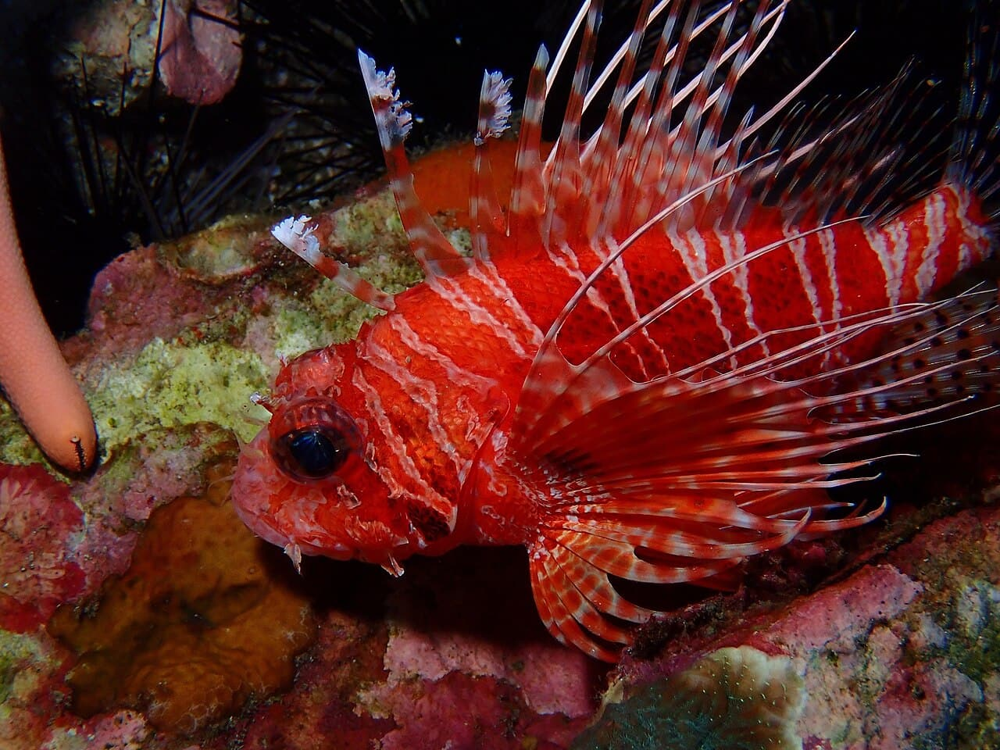

Richelieu Rock
Andaman, Thaïlande · plongée, snorkeling

Pinacle isolé en mer d'Andaman : explosion de couleurs et requins-baleines de passage, top spot thaïlandais.
- Lieu
- Andaman, Thaïlande
- Niveau
- Intermédiaire
- Activités
- plongée, snorkeling
- Type d'eau
- Mer / océan
- Coordonnées
- 9.36, 98.02 (position approximative du secteur)
Dangers à connaître
- Courants changeants autour du pinacle.
- Accès en croisière plongée.
Le conseil d'Ocean Buddy
Meilleure saison : février–avril pour les requins-baleines.
Ouvrir dans Ocean Buddy Télécharger sur l'App Store
Source : Description historique Ocean Buddy · vérification externe en attente.